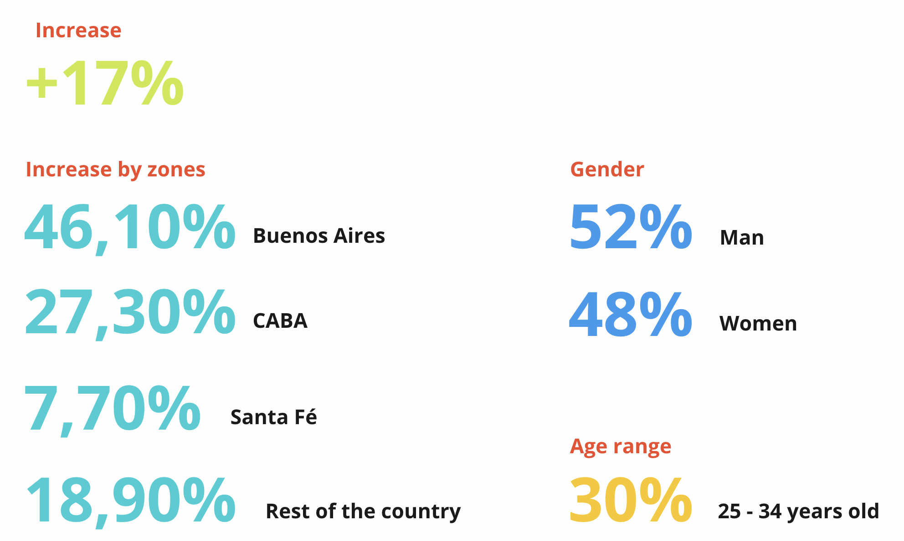
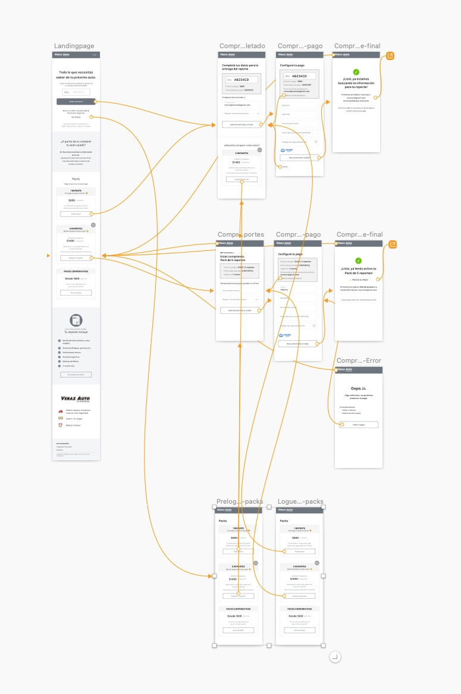

Vehicle History Report
IT Company
Research, Analysis and Prototyping
Argentina
3 weeks
2020
With only a week to present a prototype for the Vehicle History Report, the Design Sprint methodology emerged as the ideal approach. This incredible opportunity not only allowed me to learn but also to expand my capabilities significantly.
Argentines are not used to buying vehicle history reports.
Design the landing page and the vehicle history report.
In light of time limitations, the decision was made to commit to a full week of work dedicated to advancing the project. This initial week would provide valuable insights and direction for the project's progression.
We focused on two key aspects:
The testing phase was conducted with four pre-selected users.
The consultation on used cars increased by 17% during 2020.
Most potential users find information in different places. They browse many sites and also rely on word of mouth for the best used car information.
Key considerations:
We analyze two possible groups:
BTC: The final consumer. People who want to buy a used car.
BTB: The companies that can provide the report to the final consumer.
We've identified two key moments in the car-buying journey where the report plays a crucial role. The first comes before checking out the car, and the second follows the inspection.
At these stages, we can offer different prices to make the purchase smoother and more appealing for buyers.
It was decided to start working only in the best-selling used car areas.
Landing Page: We quickly sketch out some ideas and discuss how to improve the purchase process.
We focused on refining the purchase process and crafting guidelines for the wording. Our aim was to ensure clarity and create a smooth, seamless flow for the entire purchase experience.
Purchase process analysis